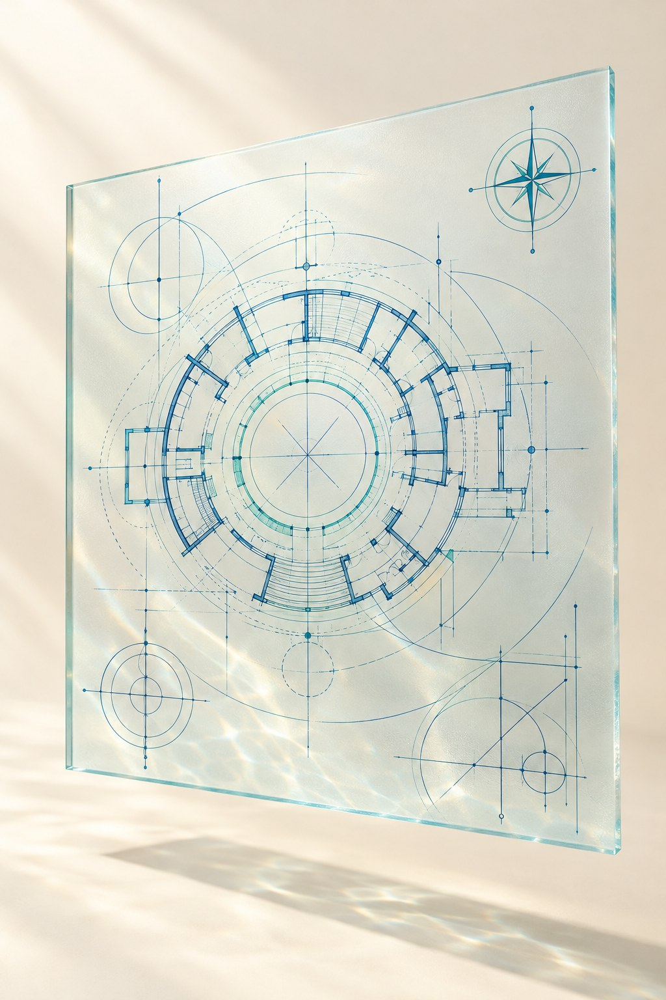

24 · THE NEXT STEP
The Longevity Blueprint.
The same cake, built week by week, on your own numbers.
01 WEEKS 1 TO 3
Foundation
Your bloodwork is the baseline. Your why, written on day one.
02 WEEKS 4 TO 7
Your data
A glucose monitor, included. Fourteen days reading your own curve.
03 WEEKS 8 TO 13
The four layers
Sleep, food, movement, stress. One experiment a week, on you.
04 WEEKS 14 TO 18
Your protocol
Your panel read, your stack audited, your protocol written and kept.

24 / 25

24 · THE NEXT STEP
The Longevity Blueprint.
The same cake, built week by week, on your own numbers.
01 WEEKS 1 TO 3
Foundation
Your bloodwork is the baseline. Your why, written on day one.
02 WEEKS 4 TO 7
Your data
A glucose monitor, included. Fourteen days reading your own curve.
03 WEEKS 8 TO 13
The four layers
Sleep, food, movement, stress. One experiment a week, on you.
04 WEEKS 14 TO 18
Your protocol
Your panel read, your stack audited, your protocol written and kept.
24 / 25
24 · THE NEXT STEP
Eighteen weeks. One protocol.
Built live, in a small class, on your own numbers.
FORMAT
18 live sessions
Fifty minutes, one evening a week. Recorded if you miss one.
CLASS
Eight to fifteen people
A certified instructor every week. Classmates who know your name.
YOUR DATA
Bloodwork and a glucose monitor
Your labs as the baseline. The monitor included, applied live in week five.
WHAT YOU LEAVE WITH
A written protocol
Nutrition, movement, sleep, stress, supplements, and the signals you keep watching.
Tonight was the map. The Blueprint is the walk.
24 / 25
24 · THE NEXT STEP
The Longevity Blueprint.
Built to remove the three things that stop people.
TIME
"I don't have hours a day."
Fifty minutes, one evening a week. Recorded if life gets in the way.
TRUST
"Who do I listen to?"
A certified instructor, live, in a class of eight to fifteen who know your name.
COST
"It needs a lab and a budget."
No lab of your own. Your bloodwork, a glucose monitor included, four supplements, not a shelf.
You leave with a written protocol, tested on your own body for eighteen weeks. Yours to keep.
24 / 25
24 · THE NEXT STEP
The Longevity Blueprint.
Eighteen live sessions. Four phases. One protocol, written for your body and tested on your own numbers.
PHASE ONE
PHASE TWO
PHASE THREE
PHASE FOUR
Week 1
your bloodwork,
your baseline
Week 5
your glucose monitor arrives, included
Week 18
your protocol, in writing, yours to keep
Time
Fifty minutes, one evening a week. Recorded if life gets in the way.
Trust
A certified instructor, live, in a class of eight to fifteen who know your name.
Cost
No lab of your own. Your bloodwork, a glucose monitor included, four supplements, not a shelf.

24 · THE NEXT STEP
The Longevity Blueprint.
The same cake, built week by week, on your own numbers.
Therapies, the icing
Sessions 14 and 15 · your panel read, your stack audited
Stress
Session 12 · stress seen on your own trace
Movement
Session 10 · the walk after your biggest meal, measured
Food
Sessions 6 to 8 · the plate rebuilt on your glucose curve
Sleep
Session 11 · one week of a sleep protocol, measured overnight
The foundation
Sessions 1 to 3 · your bloodwork, your why
Time
Fifty minutes, one evening a week, for eighteen weeks. Recorded if life gets in the way.
Trust
A certified instructor, live, in a class of eight to fifteen who know your name.
Cost
No lab of your own. Your bloodwork, a glucose monitor included, four supplements, not a shelf.
You leave with a written protocol, yours to keep.
24 · THE NEXT STEP
The Longevity Blueprint.
18 live sessions. 4 phases. One protocol. Taught live, in small classes of 8 to 15.
FOUNDATION
YOUR DATA
LIFESTYLE SYSTEMS
YOUR BLUEPRINT
Week 1
reframing aging,
your baseline
Week 5
glucose monitor, applied live in class
Week 18
your written blueprint, your next 90 days
Live, not recorded.
A certified instructor and your classmates, every week. Real questions, real answers.
Your data, your curriculum.
Your bloodwork, your glucose readings and your food experiments shape every session.
Small classes, real accountability.
Eight to fifteen people who know your name. Peer coaching in the final weeks.
A written protocol you keep.
Tested on your body for eighteen weeks. The one deliverable built to outlast the course.
24 · THE NEXT STEP
The Longevity Blueprint.
Eighteen live sessions, fifty minutes each, in a class of eight to fifteen with a certified instructor. Four phases, one protocol.
01Foundation
SESSIONS 1 TO 3
Aging as a trajectory you can change
Lifespan, healthspan, and your why
Your baseline: grip, sit to stand, resting heart rate
Blood sugar as the central signal
02Your data
SESSIONS 4 TO 7
Glucose variability and metabolic flexibility
Your glucose monitor, applied live in class
Fourteen days reading your own curve
Plate architecture: protein, fiber, processing
03The four layers
SESSIONS 8 TO 13
Meal timing and fasting, matched to your data
Gut health and fiber diversity
Movement as a glucose tool, the post-meal walk
Sleep, circadian rhythm, overnight glucose
Stress and the spikes that are not food
Cardiovascular longevity: cholesterol, fitness
04Your blueprint
SESSIONS 14 TO 18
Reading your blood panel: normal versus optimal
Supplements and tests through the evidence hierarchy
Social health and purpose as longevity drivers
Your personal longevity blueprint, written and peer reviewed
Your next ninety days
You leave with a written protocol across nutrition, movement, sleep, stress and supplements, tested on your own numbers for eighteen weeks, with a ninety-day plan and a class that holds you to it.
24 · THE NEXT STEP
The Longevity Blueprint.
Eighteen live sessions. A class of eight to fifteen. One written protocol.
01
Foundation
SESSIONS 1 TO 3
Your baseline and your why.
Blood sugar as the signal.
02
Your data
SESSIONS 4 TO 7
Your glucose monitor, live in class.
The plate rebuilt on your curve.
03
The four layers
SESSIONS 8 TO 13
Sleep, food, movement, stress.
One experiment a week, on you.
04
Your blueprint
SESSIONS 14 TO 18
Your panel read, your stack audited.
Your protocol, written and kept.
You leave with a written protocol, tested on your own numbers for eighteen weeks. Yours to keep.